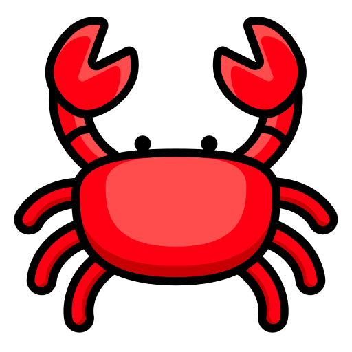
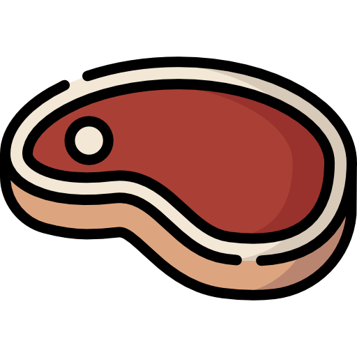

Abecedario
- Vocales
- A |a|
 Ako - mano
Ako - mano- E |e|
 Etini - armadillo
Etini - armadillo- I |i|
 Inki - maní
Inki - maní- O |o|
-  Oshero - cangrejo
- Abecedario ashaninka
- A |a|
- Ako - mano
- B |ba|
-  Batsatsi - carne
- Beanentsi - arco (instrumento de caza)
- Birakocha - persona colona
- Borisa - bolsa
- CH |cha|
- Chakopi - flecha

Cherepito - especie de ave (martin pescador)
- Chikiri - chicle
- Chomoiki - fruta silvestre
- E |e|
- Etini - armadillo
- I |i|
- Inki - flecha
- J |j|
- Jananeki - niño
- Jebarentsi - abanico
- Jibari - jefe
- Jobentsi - bebe
- K |k|
- Kaniri - yuca
- Kemari - sachavaca
- Kiri - pijuayo (especie de palmera)
- Kotsiro - cuchillo
- M |ma|
- Maniti - Tigre
- Mereto - anchoveta
- Mishi - gato
- Moropa - especie de plátano
- N |na|
- Naranka - naranja
- Netsi - piojo
- Nija - agua
- Nonampi - mi pueblo
- Ñ |ña|
- Ñakarontsi - número
- Añero - vemos
- Ñorinti - guarda caballo
- Maño - zancudo
- O |o|
- Oshero - cangrejo
- P |pa|
- Perenti - Plátano
- Peranti - ocioso
- Pirinto - especie de rana
- Potsoti - achiote
- R |ra| - no existe palabras que inician con "r", aparecen al medio o final de la palabra
- Parari - lobo marino
- Pareto - loro
- Periki - gorgojo
- Pocharo - tabaco
- S |sa|
- Sani - avispa
- Saniri - lagarto
- Samani - majas (especie de roedor)
- Soroni - oso perezoso
- SH |sha|
- Sharoni - cutpe
- Osheki - mucho
- Shinki - maíz
- Shonkaro - círculo
- T |t|
- Tapetsa - tamshi
- Tenari - pesado
- Tisoni - gallinazo
- Tontori - erizo
- TS |tsa|
- Tsarato - morral, bolsa
- Tsentero - especie de pona, palmera
- Tsiroti - paucar, ave que imita cualquier sonido o silbo producido por otros animales
- Tsorero - hongos
- TY |tya|
- Tyapa - gallina
- Kityonkari - color rojo
- Atyo - cuñada
- Tyopiki - pollito
- Y |ya|
- Yarato - especie de abeja
- Ankoye - recolectar
- Antyari - grande
- Yora - él

Apankenatyaro - practicamos
Los saludos - Betsatantsi
-
Ainijempa - presentación
Nopajita, David García - mi nombre es, David García
Nopoña Tampoki, soy de Rio Tambo
Nosarentsite irointi mabatsa tin- mi edad es treinta y nueve
-
Betsatantsipe - saludos
- Kitaiteri - buenos días (saludo en las mañanas)
- Tampatika - buenas tardes (saludo al medio día)
- Shabitaji - buenas tardes (saludo en las tardes)
- Tsiteniri - buenas noches (saludo en las noches)
-
Ejemplos de saludos
Kitaiteri Mairoki - buenos días Mairoki
Je, kitaiteri Benki - Si, buenos días BenkiTampatika Korinto - buenas tardes Korinto
Je, tampatika Keshi - Si, buenas tardes KeshiShabitaji Mapashi - buenas tardes Mapashi
Je, shabitaji Peko - Si, buenas tardes PekoTsiteniri Etsiki - buenas noches Etsiki
Je, tsiteniri Matire - Si, buenas noches Matire-
Pregunta y respuestas cuando se encuentra con otra persona
Ari - hola
Je, ari - Si, hola
Kitaiteri - Buenos días
Je, Kitaiteri - Si, buenos días
¿Jaoka pipajitari? - ¿Cuál es tu nombre?
Naro, nopajita Kimoshire - Mi nombre es Kimoshire
¿Jaoka pipoñari? - ¿De donde eres?
Naro, nopoña Satipoki - Soy de Satipo
-
Jatantsipe - despedidas
Nojatabajeta - hasta luego, nos vemos
Amaje - hasta mañana
Ari añabakajea - hasta la próxima
Nojatabajeta jaiji Etsiki - nos vemos hermano Etsiki
Je, ari tsio Mesha - Si, hermana MeshaAmaje Markiriña - hasta mañana Makiriña
Je, ari amaje Anasha - Si, hasta mañana AnashaAri añabakajea Kashiri - hasta la próxima Kashiri
Je, ari añabakajea Kotibe - Si, hasta la próxima KotibeApankenatyaro - practicamos
Oficios
Obametantatsi - profesor
Abintantatsiri - doctor
Pinkatsari - jefe
Kamantantantsiri - comunicador
Apankenatyaro - practicamos
Los Números - Ñakarontsipe
-
Numerales del uno al diez
0. Tekatsi - cero
-
1 - Aparoni - uno
Aparoni parenti - un plátano
2 - Apite - dos
Apite tibana - dos piñas
3 - Maba - tres
maba shima - tres pescados, boquichicos, chupadoras
4 - Otsi - cuatro
otsi kantiri - cuatro canastas
5. Koni - cinco
koni mashero - cinco sapos
6. Iko - seis
iko tsarato - seis bolsa
7. Tson - siete
tson mapocha - siete papayas
8. Soti - ocho
Soti sabiri - ocho machetes
9. Tin - nueve
tin sharoni - nueve añuje (especie de roedor)
10. Tsa - diez
tsa opempe - diez tucanes
-
Numerales superiores a diez
11. Tsapani
12. Tsapite
13. Tsamaba
14. Tsaotsi
15. Tsakoni
16. Tsaiko
17. Tsatson
18. Tsasoti
19. Tsatin
20. Pitetsa
20 - Pitetsa
21 -
30 - Mabatsa
31 -
40 - Otsitsa
- 41 -
50 - Konitsa
60 - Ikotsa
70 - Tsontsa
80 - Sotitsa
90 - Tintsa
100 - Sheki
101 -
1,000 -
1001 -
10,000 -
15,321 -
100,000 -
956,321 –
1,000,000 -
Apankenatyaro - practicamos
La familia
Familia
Apa - papá
Ina - mamá
Notomi - hijo
Noshinto - hija
Chaine - abuelo
Isha - abuela
Parientes
Apatsori - tío
Inatsori - tía
Nirentitsori - primo
Notsirotsori - prima
Koki - suegro
Airontsi - suegra
Nirento - hermana (mujer a mujer)
Iye - hermano (varón a varón)
Tsio - hermana (varón a mujer)
Nojariri - hermano (mujer a varón)
Nonatoto - cuñada (mujer a mujer)
Ani - cuñado (varón a varón)
Nojimetsori - cuñado (mujer a varón)
Presentación de la familia
Notomi ipajita - Mi hijo se llama...
Noshinto opajita - Mi hija se llama...
Niri ipajita - Mi papá se llama...
Noniro opajita - Mi mamá se llama...
Ñoti ipajita - Mi yerno se llama... (habla varón)
Nairo opajita - Mi nuera se llama... (habla varón)
Notineri ipajita - Mi yerno se llama... (habla mujer)
Nobatayero opajita - Mi nuera se llama ... (habla mujer)
Nocharine ipajita - Mi abuelo se llama... (habla varón)
Nosaro opajita - Mi abuela se llama... (habla varón)
Nosari ipajita - Mi abuelo se llama... (habla mujer)
Nosari opajita - Mi abuela se llama... (habla mujer)
Nokonkiri ipajita - Mi suegro se llama... (habla varón)
Airontsi opajita - Mi suegra se llama... (habla varón)
Nokonkiri ipajita - Mi suegro se llama... (habla mujer)
Nairo opajita - Mi suegra se llama... (habla mujer)
Niritsori ipajita - Mi tío se llama
Nonirotsori opajita - Mi tía se llama
Apankenatyaro - practicamos
Pronombres personales - Poyatantsi atiritakotirori
Pronombres personales
Aparotirori - singular
Naro - yo
Abiro - tú, usted
Iriori - él
Irori- ella
Oshekitirori- plural
Narojei - nosotros(as)
Abirojei - ustedes
Iriorijei - ellos
Irorijei - ellas
Prefijos de pronombres
Yo - Naro - No
Tú - Abiro - Pi
Él - Iriori - I
Ella - Irori - O
Práctica con naro
Naro Pinkatsari- Yo soy jefe
Naro tsinane - Yo soy mujer
Naro obametantsiri - Yo soy profesor
Naro nopajita - Yo soy, yo me llamo
Naro nosaiki - Yo vivo en
Naro nobaro - Yo como
Naro noshiya - Yo corro velóz
Naro nopampoyei - Yo canto
Apankenatyaro - practicamos
Los verbos - Antayetaantsi
Verbos infinitivos
Pampoyaantsi - cantar
Shirontaantsi - reír
Ñanataantsi - hablar
Kijaantsi - cargar
Shipokaantsi- evaporar
Potsotaantsi- pintar
Jikotaantsi - señalar
Chotankaantsi - aplaudir
Betsataantsi - saludar
Takiriaantsi - pelar
Ñanataantsi - leer
Tamporotaantsi - tocar
Kijaantsi - cargar
Ampitayetaantsi - tejer
Sheronkantsi - raspar
Betsikaantsi - elaborar
Kobintsataantsi - cazar
Kibaantsi - lavar
Koyaantsi - cosechar
Saikaantsi - sentar
Kitaantsi - servir
Kataantsi - bañar
Betsataantsi - saludar
Kenkitsatantsi - dialogar
Komotaantsi - remar
Kemisantaantsi - escuchar
Totaantsi - cortar
Conjugaciones
Pishitaantsi - barrer
Nopishiti - yo barro
Pipishiti - tú barres
Ipishiti - él barre
Opishiti - ella barre
Shiyaantsi - correr
Noshiya - yo corro
Pishiya - tú corres
Ishiya - él corre
Oshiya - ella corre
Anitaantsi - caminar
Naniti - yo camino
Paniti - tú caminas
Yaniti - él camina
Aniti - ella camina
Sankenataantsi - escribir
Nosakenati - yo escribo
Pisankenati - tú escribes
Isankenati - él escribe
Osankenati - ella escribe
Apankenatyaro - practicamos